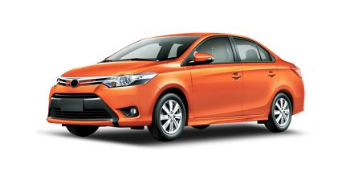
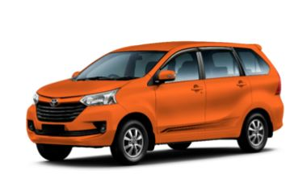
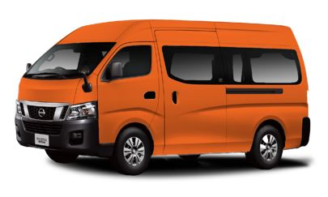

This is definitely your cheapest 4-wheel option! At present, we can accommodate deliveries weighing up to 200 kg. But as we are continuously enhancing our delivery services' flexibility, our sedan fleet is the answer to the ever-growing needs of our customers while creating more private car delivery jobs for the driving community.
If you're a "halamom" wanting to transfer your potted plants safely, this is the 4-wheeler delivery vehicle for you! Items such as small appliances are also well taken care of by our Sedan fleet. Check out further details about the 200 kg Sedan below:

Despite being the smallest of our delivery van options, the 300 kg MPV is not small in terms of usability. This vehicle is also the cheapest on-demand delivery van available across Luzon and in Cebu! It is perfect for moving items that are too fragile for motorcycle delivery, such as cake deliveries, or like when moving plants and vases.
Small to medium appliances like microwave ovens and desktop computers are also suitable for this delivery vehicle. As long as it’s too big or fragile for a motorcycle, you can trust an MPV 300 kg to do the job well. See more details about it below:

Being the mid-tier 4-wheel vehicle for delivery, the 600 kg MPV offers flexibility matched with affordability. This is perfect for items that are not exactly gigantic but are still bulky. Different kinds of furniture, such as cabinets, bookshelves, and chairs fit perfectly in this vehicle.
Add items for the office -- starting with tables, swivel chairs, and office supplies -- to the list of items that could also be delivered easily via the MPV 600 kg. Scroll down to know more about it: